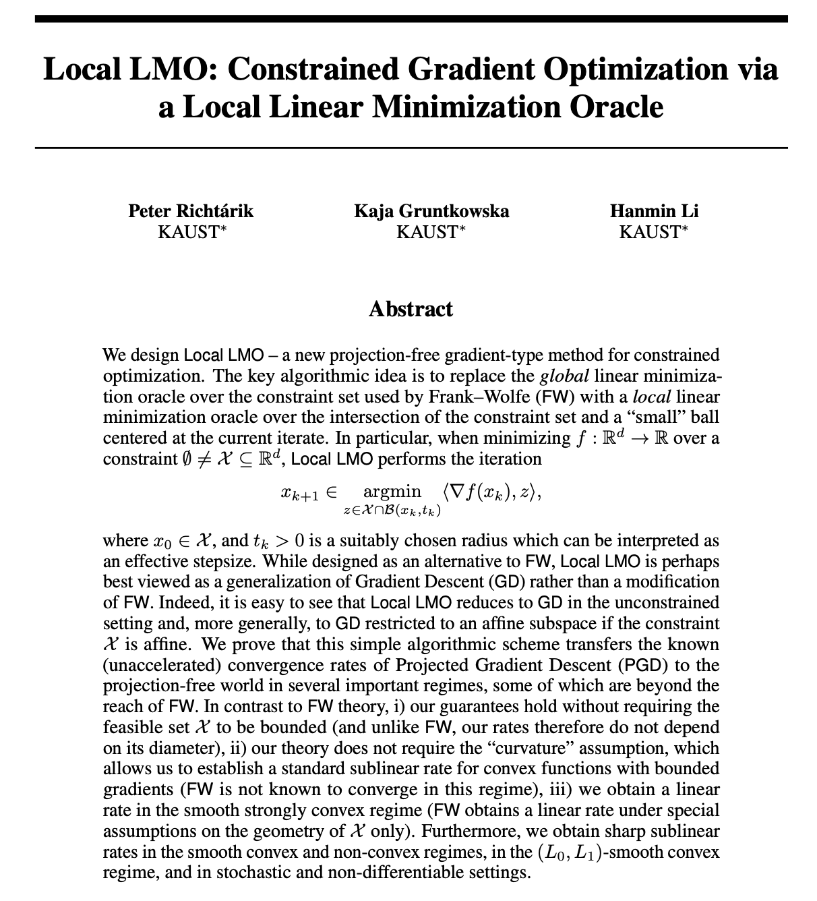
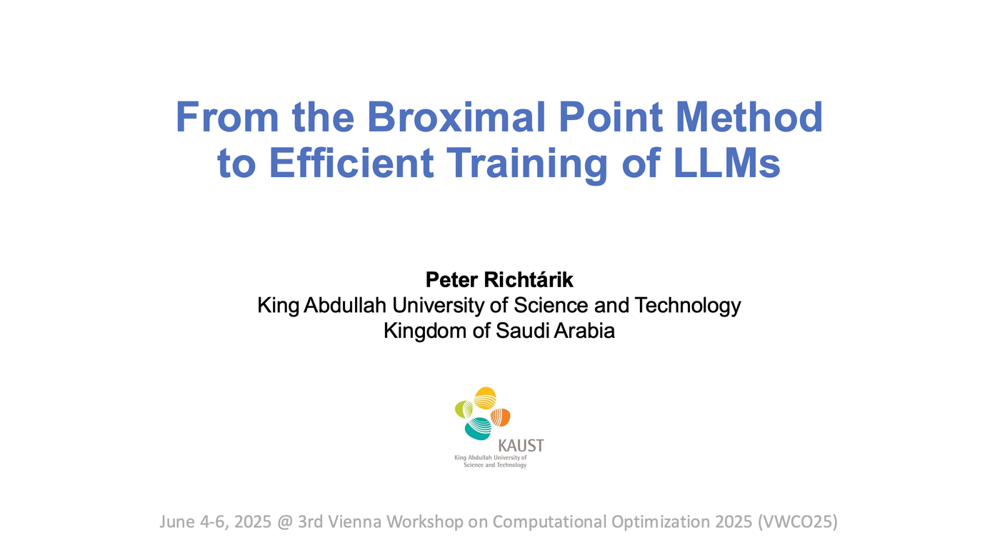
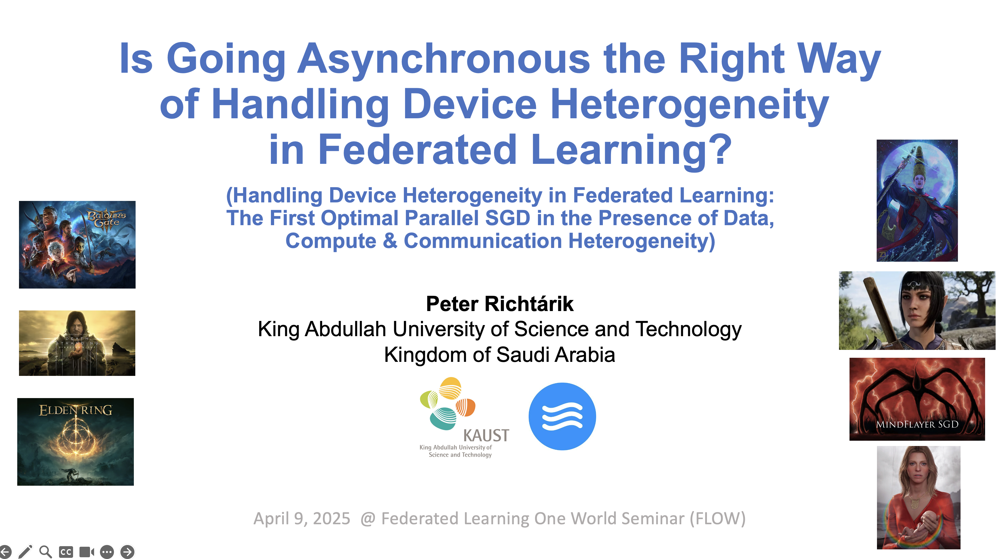

July 3, 2026
Attending ICML 2026 @ Seoul, Korea
I've just arrived to Seoul, Korea, to attend ICML 2026. Strange at it seems, this is my first time to Korea!Several current (e.g., Abdurakhmon Sadiev, Egor Shulgin, Grigory Malinovsky) and former (e.g., Martin Takáč, Konstantin Mishchenko, Adil Salim, Samuel Horváth, Slavomír Hanzely, Rustem Islamov, Kirill Acharya, Philip Zmushko) members of my lab are attending, too. We have several papers spanning the main conference and the workshops:
- Artem Riabinin, Egor Shulgin, Kaja Gruntkowska, Peter Richtárik
From Muon to Gluon: Bridging Theory and Practice of LMO-based Optimizers for LLMs
July 7, Poster Session 1 - Egor Shulgin, Tamaz Gadaev, Sarit Khirirat, Peter Richtárik
Understanding MARS: When Scaling Momentum Correction Provably Helps
July 8, Poster Session 4 - Egor Shulgin, Mohamed Awad, Peter Richtárik, Eduard Gorbunov
General Analysis of LMO-based Optimizers: Beyond Bounded Variance
July 9, Poster Session 7 - Ammar Mahran, Artavazd Maranjyan, Peter Richtárik
Rescaled Asynchronous SGD: Optimal Distributed Optimization under Data and System Heterogeneity
July 9, The 6th Muslims in ML Workshop - Egor Shulgin, Jörg K.H. Franke, Dimitri von Rütte, Tianyue H. Zhang, Niccolò Ajroldi, Korbinian Pöppel, Bernhard Schölkopf, Aaron Klein, Peter Richtárik, Antonio Orvieto
Deriving Hyperparameter Scaling Laws via Modern Optimization Theory
July 10, HiLD 2026: 4th Workshop on High-dimensional Learning Dynamics - Egor Shulgin, Sam Laing, Antonio Orvieto, Peter Richtárik
A Quadratic Lens on Muon: Orthogonalization, Invariance, and Implicit Preconditioning
July 10, HiLD 2026: 4th Workshop on High-dimensional Learning Dynamics
Further notable workshops:
- July 10: Protocol Learning Workshop - with Konstantin Mishchenko, Samuel Horváth and Egor Shulgin
- July 10: AI as a Tool for Mathematics, Computer Science, and Machine Learning - with Adil Salim
June 19, 2026
New Paper
New paper out: "Convergence Analysis of Muon-type Methods with Inexact LMO in the Degenerate Case" - joint work with Xun Qian.Abstract: Muon-type methods have demonstrated potentially superior performance over Adam and its variants, and have shown hyperparameter transferability across model sizes when specific norms are chosen for the LMO in deep architectures. However, while the LMO is solved approximately via iterative algorithms in practice, most convergence analyses consider the ideal case where the search direction is the exact solution to the LMO. Recently, the inexact Muon update was analyzed by Shulgin et al. [2025], which reveals a fundamental coupling between the inexactness and the optimal step size and momentum. However, the convergence is guaranteed for the non-degenerate case only, i.e., the smallest positive singular value of the rescaled momentum is assumed to be bounded below by some positive constant when the spectral norm is used. In this work, we investigate Muon-type methods with inexact LMO in the degenerate case, where the smallest positive singular value of the rescaled momentum can approach zero, for the general non-convex case and the star-convex case with weight decay. Novel assumptions are proposed to address the challenges posed by inexact LMO in such degenerate scenarios, and convergence rates are established under the layer-wise $(L^0,L^1)$-smooth assumption for both cases.
June 16, 2026
Back on campus
After a series of research visits and conference travel, I am now back on at KAUST.June 14, 2026
New Paper
New paper out: "SILAGE: Memory-Efficient, Full-Gradient-Free Nonconvex Optimization for Nested Finite Sums" - joint work with Igor Sokolov and Laurent Condat.Abstract: Empirical risk minimization on massive datasets naturally exhibits a nested double finite-sum structure, where $N=nm$ total samples are logically or physically partitioned into n blocks of size $m$ (e.g., in pooled data silos, out-of-core learning, or deliberate stratification). While variance-reduced methods achieve optimal oracle complexities for nonconvex objectives, they suffer from severe scaling bottlenecks in this centralized regime. Recursive estimators, such as PAGE, require periodic global full-gradient refreshes over all $nm$ samples, which are computationally expensive. Conversely, single-loop methods, such as SILVER, avoid such refreshes but require an impractical $O(nm)$ memory footprint to store a control variate for every sample. In this paper, we propose SILAGE, a variance-reduced algorithm that addresses this trade-off. By actively exploiting the double-sum structure, SILAGE eliminates periodic global full-gradient refreshes over all $nm$ components (evaluating at most one local group gradient per iteration) while requiring only $O(n)$ memory. Furthermore, we provide a tight convergence analysis that avoids pessimistic worst-case Lipschitz constants. Instead, SILAGE's complexity natively adapts to the underlying data geometry via nested functional similarities: across-group ($\delta_1$) and within-group ($\delta_2$) heterogeneity. Our results improve existing state-of-the-art bounds in several practically relevant regimes.
June 2, 2026
New Paper
New paper out: "Demystifying Pipeline Parallelism: First Theory for PipeDream" - joint work with Ivan Ilin.Abstract: Training modern machine learning models increasingly requires computation to be distributed across many accelerators. Data parallelism remains the default choice and is often paired with tensor-parallel sharding, but model parallelism becomes unavoidable once parameters, activations, or optimizer states no longer fit on a single device. This paper studies pipeline model parallelism through the lens of PipeDream (PD) (Harlap et al., 2018). Our first contribution is theoretical: we introduce Randomized PipeDream (RPD), a stale block-SGD abstraction that yields, to our knowledge, the first clean nonconvex convergence guarantee for a PD-style method. Our second contribution is a scaling diagnosis: we prove that the delay induced by steady-state PD grows as $S^2−S/2+O(1)$ for $S$ stages, so the stale-read contribution in the convergence theorem scales as $Θ(\gamma^2 S^4)$, equivalently as $Θ(S^4/K)$ in the tuned-rate form. Our third contribution is a comparison with LocalSGD, whose periodic model averaging trades weight staleness for synchronization bubbles. In our reported simulated-time experiments, the better-performing method depends on the objective: PD performs better on the quadratic objective and on a small language-modeling training-loss task, while for logistic regression LocalSGD becomes superior as the number of stages increases.
May 30, 2026
DIS 2026 in Czechia
I am on my way to Ústí nad Labem, Czech Republic. On Tuesday (June 2nd), I'll deliver a plenary lecture at The 9th International Conference on Dynamics of Information Systems (DIS 2026). Haven't been to Czechia for many years -- very much looking forward!May 26, 2026
New Paper
New paper out: "A Unified Primal-Dual Recipe for Accelerating Three-Operator Splitting Methods" - joint work with Abdurakhmon Sadiev and Laurent Condat.Abstract: Composite optimization problems, formulated as the minimization of three functions, are ubiquitous in large-scale machine learning and signal processing. While state-of-the-art splitting methods such as Condat-Vũ (CV) [Condat, 2013, Vũ, 2013], Primal-Dual Davis-Yin (PDDY) [Salim et al., 2022b], and Primal-Dual Twice Reflected (PDTR) [Malitsky and Tam, 2026] are highly versatile, they inherently exhibit non-accelerated convergence rates. Existing accelerated primal-dual splitting results either focus on special structures like one of the functions being zero, or linearly constrained problems, or smooth regimes, or directly use Nesterov-type momentum. Our contribution is a unified Bregman primal-dual framework that yields four variants and a common Lyapunov analysis. By applying the Chambolle-Pock algorithm [Chambolle and Pock, 2011] to primal-dual reformulations, we systematically derive four novel accelerated algorithms: Accelerated Condat-Vũ (ACV-I and ACV-II) and Accelerated Primal-Dual Twice Reflected (APDTR-I and APDTR-II). Through a simplified Lyapunov-based analysis, we establish iteration complexities for both smooth and nonsmooth cases, successfully removing the restrictive assumptions restrictions required by prior works.
May 20, 2026
New Paper
New paper out: "LOSCAR-SGD: Local SGD with Communication-Computation Overlap and Delay-Corrected Sparse Model Averaging" - joint work with Yassine Maziane, Ammar Mahran, and Artavazd Maranjyan.Abstract: Communication is a major bottleneck in distributed learning, especially in large-scale settings and in federated learning environments with slow links. Three standard ways to reduce this cost are communication compression, local training, and communication-computation overlap. Methods that combine these ingredients are used in practice and have been found to be effective for large-scale training, but there is little theory for methods that combine all three. We study a heterogeneous-compute setting in which different workers may take different numbers of local steps, and we propose LOSCAR-SGD, a Local SGD method that communicates only a sparse subset of model coordinates and continues optimizing while communication is in flight. A key ingredient is a delay-corrected merge rule that incorporates delayed synchronized information without discarding the progress made during the overlap phase. We give convergence guarantees for smooth non-convex objectives and show how sparsity, overlap, and worker heterogeneity affect the rate. To the best of our knowledge, this is the first theory for this combination of ingredients. Experiments further show that communication-computation overlap reduces training time and that the delay-corrected merge outperforms naive overwriting.
May 18, 2026
New Paper
New paper out: "Distance-Aware Muon: Adaptive Step Scaling for Normalized Optimization" - joint work with Yury Demidovich, Abhishek Chakraborty, Grigory Malinovsky, and Angelia Nedić.Abstract: Muon and related normalized optimizers decouple the choice of update direction from the choice of step scale, but their practical performance remains sensitive to the scale of the normalized step. We study adaptive scaling rules for Muon in general norm geometries and develop three complementary algorithms. For smooth non-convex objectives, we introduce Distance-Adaptive Muon, whose trust-region radius is set from the radius explored by the trajectory, and prove a stationarity guarantee under a bounded-trajectory assumption. We then turn to star-convex objectives, a tractable model of the favorable global geometry often used to reason about the empirical loss landscapes of deep neural networks, where objective-gap guarantees are possible. In this setting, we first introduce Scale-Calibrated Muon, which keeps Muon's exponential moving average but sets the step length from a local descent certificate computed from the current gradient and momentum. For this method, we prove a last-iterate O(1/T) objective-gap bound under a bounded initial sublevel-set assumption, where the corresponding radius parameter appears only in the analysis and not in the algorithm. Finally, we develop Distance-Free Muon, a recentered trust-region method that uses a scalar distance certificate and a majorized one-dimensional search to select the trust-region radius without requiring the unknown distance from the initialization to a global minimizer. Experiments on Transformer language modeling (GPT-124M/WikiText-103) and image classification (ViT-Tiny/CIFAR-100) show that the proposed adaptive scaling rules reduce sensitivity to manual scale tuning and match or improve tuned fixed-scale Muon baselines under the tested budgets.
May 18, 2026
New Paper
New paper out: "Ringmaster LMO: Asynchronous Linear Minimization Oracle Momentum Method" - joint work with Abdurakhmon Sadiev, Artavazd Maranjyan, and Ivan Ilin.Abstract: Muon has recently emerged as a strong alternative to AdamW for training neural networks, with encouraging large-scale pretraining results and growing evidence that matrix-structured updates can be faster in practice. Yet Muon, and more generally Linear Minimization Oracle (LMO) based methods, are typically used synchronously. This is problematic in heterogeneous distributed systems, where workers complete gradient computations at different speeds and synchronous training must repeatedly wait for slower workers. In this work, we introduce Ringmaster LMO, an asynchronous LMO-based momentum method for unconstrained stochastic nonconvex optimization. Our method builds on the delay-thresholding idea of Ringmaster ASGD. For SGD-type methods, Ringmaster ASGD achieves optimal time complexity by discarding overly stale gradients. Ringmaster LMO extends this mechanism to general LMO-based updates. We establish convergence guarantees under generalized (L0,L1)-smoothness and further develop a parameter-agnostic variant with decreasing stepsizes and adaptive delay thresholds. Finally, we translate our iteration guarantees into time complexity bounds under heterogeneous worker computation times. In the classical Euclidean smooth setting, these bounds recover the optimal time complexity of Ringmaster ASGD. Experiments on stochastic quadratic problems and NanoChat language-model pretraining show that the advantages of Ringmaster LMO grow with system heterogeneity and that the method outperforms strong synchronous and asynchronous baselines..
May 13, 2026
New Paper
New paper out: "Rescaled Asynchronous SGD: Optimal Distributed Optimization under Data and System Heterogeneity" - joint work with Ammar Mahran and Artavazd Maranjyan.Abstract: Asynchronous stochastic gradient descent (ASGD) is a standard way to exploit heterogeneous compute resources in distributed learning: instead of forcing fast workers to wait for slow ones, the server updates the model whenever a gradient arrives. Vanilla ASGD applies each arriving gradient with the same weight. When local data distributions are heterogeneous, this becomes problematic: faster workers contribute more updates, and we show theoretically that the method is biased toward a frequency-weighted average of the local objectives rather than the desired global objective. Existing remedies typically move away from the simple ASGD template by introducing gathering phases, buffering, or extra memory. We show that this is unnecessary. Keeping the standard ASGD mechanism, we recover the correct objective by rescaling worker-specific stepsizes in proportion to their computation times, so that each worker contributes the same aggregate learning rate over a cycle. In the non-convex setting, under smoothness and bounded heterogeneity assumptions, we prove that the resulting method, Rescaled ASGD, converges to stationary points of the correct global objective in the fixed-computation model. Its time complexity matches the known lower bound in the leading term, while the effects of staleness and data heterogeneity appear only in lower-order terms. Experiments confirm that the method converges to the correct objective and is competitive with state-of-the-art baselines.
May 9, 2026
New Paper
New paper out: "Rennala MVR: Improved Time Complexity for Parallel Stochastic Optimization via Momentum-Based Variance Reduction" - joint work with Zhirayr Tovmasyan and Artavazd Maranjyan.Abstract: Large-scale machine learning models are trained on clusters of machines that exhibit heterogeneous performance due to hardware variability, network delays, and system-level instabilities. In such environments, time complexity rather than iteration complexity becomes the relevant performance metric for optimization algorithms. Recent work by Tyurin and Richtárik (2023) established the first time complexity analysis for parallel first-order stochastic optimization, proposing Rennala SGD as a time-optimal method for smooth nonconvex optimization. However, Rennala SGD is fundamentally a modification of SGD, and variance reduction techniques are known to improve the iteration complexity of SGD. In this work, we investigate whether variance reduction can also improve time complexity in heterogeneous systems. We show that, under a mean-squared smoothness assumption, variance reduction can improve time complexity in relevant parameter regimes. To this end, we propose Rennala MVR, a variance-reduced extension of Rennala SGD based on momentum-based variance reduction, and analyze its oracle and time complexity. We establish lower bounds for time complexity under these assumptions. On a stochastic quadratic benchmark, experiments with the exact method support the theory, while neural-network experiments with a practical inexact variant show similar empirical gains over Rennala SGD.
May 9, 2026
New Paper
New paper out: "Local LMO: Constrained Gradient Optimization via a Local Linear Minimization Oracle" - joint work with Kaja Gruntkowska and Hanmin Li.
May 5, 2026
Off to Sweden!
I am off to Lund, Sweden, to attend the ELLIIT Symposium on Optimization for Learning, with a lineup of star speakers. Together with Jeremy Bernstein (Thinking Machines), Jelena Diakonikolas (University of Wisconsin-Madison), Niao He (ETH Zurich) and Alp Yurtsever (Umeå University), I am on the scientific committee for this event. I am the opening speaker on May 6 -- will talk about new exciting work on Local LMO (a new projection-free method for constrained optimization based on a local variant of the linear minimization oracle), to be put on arXiv soon!Update 1: Here are my slides:
Update 2: The paper is on arXiv now.
Update 3: A tweet / X post related to this method.
May 2, 2026
AISTATS 2026, Tangier, Morocco
Together with my PhD students Egor Shulgin and Abdurakhmon Sadiev, I are attending AISTATS 2026 in Tangier Morocco. We are presenting our papers:- Adrien Fradin, Abdurakhmon Sadiev, Laurent Condat, and Peter Richtárik. Tight lower bounds and optimal algorithms for stochastic nonconvex optimization with heavy-tailed noise,
- Egor Shulgin, Sultan AlRashed, Francesco Orabona, and Peter Richtárik. Beyond the ideal: Analyzing the inexact Muon update.
May 1, 2026
Papers Accepted to ICML 2026
The following papers from my Optimization and Machine Learning Lab were accepted to ICML 2026, to be held in Seoul, South Korea, during July 6-11, 2026:- Artem Riabinin, Egor Shulgin, Kaja Gruntkowska, and Peter Richtárik. From Muon to Gluon: Bridging Theory and Practice of LMO-based Optimizers for LLMs.
- Egor Shulgin, Tamaz Gadaev, Sarit Khirirat, and Peter Richtárik. Understanding MARS: When Scaling Momentum Provably Helps.
- Egor Shulgin, Mohamed Awad, Peter Richtárik, and Eduard Gorbunov. General Analysis of LMO-based Optimizers: Beyond Bounded Variance.
April 22, 2026
ICLR 2026, Rio de Janeiro, Brazil
Several members of my team are attending ICLR in Rio: Artavazd "Arto" Maranjyan, Kaja Gruntkowska, Alexander Gaponov, and Zhirayr Tovmasyan. They are presenting our papers:- Error feedback for Muon and friends,
- Ringleader ASGD: The first asynchronous SGD with optimal time complexity under data heterogeneity,
- Tighter performance theory of FedExProx.
April 15, 2026
New Paper
New paper out: "Broximal Alignment for Global Non-Convex Optimization" - joint work with Kaja Gruntkowska, Hanmin Li, and Xun Qian.Abstract: Most non-convex optimization theory is built around gradient dynamics, leaving global convergence largely unexplored. The dominant paradigm focuses on stationarity, certifying only that the gradient norm vanishes, which is often a weak proxy for actual optimization success. In practice, gradient norms can stagnate or even increase during training, and stationary points may be far from global solutions. In this work, we propose a new framework for global non-convex optimization that avoids gradient-based reasoning altogether. We revisit the Ball Proximal Point Method (BPM), a trust-region-style algorithm introduced by Gruntkowska et al. (2025), and propose a novel structural condition - Broximal Alignment - under which BPM provably converges to a global minimizer. Our condition requires no convexity, smoothness, or Lipschitz assumptions, and it permits multiple and disconnected global minima as well as non-optimal local minima. We show that this class generalizes standard non-convex frameworks such as quasiconvexity, star convexity, quasar convexity, and the aiming condition. Our results provide a new conceptual foundation for global non-convex optimization beyond stationarity.
April 12, 2026
New Paper
New paper out: "Communication-Efficient Gluon in Federated Learning" - joint work with Xun Qian, Alexander Gaponov, and Grigory Malinovsky.Abstract: Recent developments have shown that Muon-type optimizers based on linear minimization oracles (LMOs) over non-Euclidean norm balls have the potential to get superior practical performance than Adam-type methods in the training of large language models. Since large-scale neural networks are trained across massive machines, communication cost becomes the bottleneck. To address this bottleneck, we investigate Gluon, which is an extension of Muon under the more general layer-wise $(L_0,L_1)$-smooth setting, with both unbiased and contraction compressors. In order to reduce the compression error, we employ the variance reduced technique in SARAH in our compressed methods. The convergence rates and improved communication cost are achieved under certain conditions. As a byproduct, a new variance reduced algorithm with faster convergence rate than Gluon is obtained. We also incorporate momentum variance reduction (MVR) to these compressed algorithms and comparable communication cost is derived under weaker conditions when $L_i^1 \neq 0$. Finally, several numerical experiments are conducted to verify the superior performance of our compressed algorithms in terms of communication cost.
April 10, 2026
New Paper
New paper out: "A Nesterov-Accelerated Primal-Dual Splitting Algorithm for Convex Nonsmooth Optimization" - joint work with Laurent Condat and Abdurakhmon Sadiev.Abstract: We investigate the integration of Nesterov-type acceleration into primal-dual methods for structured convex optimization. While proximal splitting algorithms efficiently handle composite problems of the form $\min f(x)+g(x)+h(Kx)$, accelerating their convergence with respect to the smooth term $f$ is notoriously challenging due to the rotational dynamics in the primal-dual space. In this paper, we overcome this barrier by proposing the Accelerated Proximal Alternating Predictor-Corrector algorithm (APAPC), focusing on the setting where $g(x)=\frac{\mu_g}{2} \|x\|^2$. Our analysis reveals that Nesterov momentum can be seamlessly integrated into a primal-dual forward-backward scheme by exploiting the strong convexity of the dual problem to stabilize the accelerated primal updates. Using a unified Lyapunov framework, we establish optimal $O(1/t^2)$ sublinear convergence rates, as well as accelerated linear convergence when $\mu_g>0$, across three regimes of dual strong convexity: (i) when h is smooth, (ii) when the linear operator $K^*$ is bounded below, and (iii) for linearly constrained optimization. Furthermore, leveraging recent results on accelerated gradient descent, we characterize the weak convergence of the primal-dual iterates to a saddle-point solution.
April 8-10, 2026
Keynote @ ICMI 2026
On April 9, I am giving a keynote at the IEEE 5th International Conference on Computing and Machine Intelligence (ICMI 2026), held at King Faisal University in Al-Ahsa, Kingdom of Saudi Arabia.Update: Unfortunately, due to technical issues with internet connection, I was not able to deliver this remote/Zoom talk. I apologize to all conference participants!
April 3, 2026
New Paper
New paper out: "Stabilized Proximal Point Method via Trust Region Control" - joint work with Hanmin Li and Kaja Gruntkowska.Abstract: The Proximal Point Method (PPM) (Rockafellar, 1976) is a fundamental tool for nonsmooth convex optimization. However, its convergence is not linear under general convexity in the absence of strong convexity or other structural assumptions. To address this limitation, we study a trust-region stabilized proximal point scheme in which each proximal update is computed over a localized feasible region. We show that this simple stabilization enforces non-vanishing steps and yields a linear decrease in objective values outside any prescribed neighborhood, without assuming smoothness or strong convexity. Our analysis identifies a displacement condition as the key driver of linear descent and provides two complementary parameter regimes to guarantee it: fixing the trust-region radius and choosing the regularization properly, or fixing the regularization and selecting radii via a uniform displacement lower bound. We further give explicit characterization of the linear regime conditions respectively, and prove that the trust-region is redundant under strong convexity, Finally, we establish an exact equivalence with the Broximal Point Method (BPM) (Gruntkowska et al., 2025) in the active constraint regime.
March 24, 2026
New Paper
New paper out: "Byzantine-Robust and Differentially Private Federated Optimization under Weaker Assumptions" - joint work with Rustem Islamov, Grigory Malinovsky, Alexander Gaponov, Aurelien Lucchi, and Eduard Gorbunov.Abstract: Federated Learning (FL) enables heterogeneous clients to collaboratively train a shared model without centralizing their raw data, offering an inherent level of privacy. However, gradients and model updates can still leak sensitive information, while malicious servers may mount adversarial attacks such as Byzantine manipulation. These vulnerabilities highlight the need to address differential privacy (DP) and Byzantine robustness within a unified framework. Existing approaches, however, often rely on unrealistic assumptions such as bounded gradients, require auxiliary server-side datasets, or fail to provide convergence guarantees. We address these limitations by proposing Byz-Clip21-SGD2M, a new algorithm that integrates robust aggregation with double momentum and carefully designed clipping. We prove high-probability convergence guarantees under standard L-smoothness and σ-sub-Gaussian gradient noise assumptions, thereby relaxing conditions that dominate prior work. Our analysis recovers state-of-the-art convergence rates in the absence of adversaries and improves utility guarantees under Byzantine and DP settings. Empirical evaluations on CNN and MLP models trained on MNIST further validate the effectiveness of our approach.
February 23, 2026
Opening Keynote @ Berkeley
I am visiting UC Berkeley again. This time, I am attending the Simons Institute Workshop on Learning from Heterogeneous Sources. The video recording of my opening keynote "From the Broximal Point Method to Efficient Training of LLMs" is on Youtube (it starts at 8' 50'').January 25, 2026
Three Papers Accepted to ICLR 2026
The following papers from my Optimization and Machine Learning Lab were accepted to ICLR 2026, to be held in Rio de Janeiro, Brazil, during April 23-27, 2026:- Kaja Gruntkowska, Alexander Gaponov, Zhirayr Tovmasyan, and Peter Richtárik. Error feedback for Muon and friends
- Artavazd Maranjyan and Peter Richtárik. Ringleader ASGD: The first asynchronous SGD with optimal time complexity under data heterogeneity
- Wojciech Anyszka, Kaja Gruntkowska, Alexander Tyurin, and Peter Richtárik. Tighter performance theory of FedExProx
January 24, 2026
Visiting Simons Institute @ Berkeley
I am on my way to Berkeley, to attend the Bootcamp jump-starting the Simons Institute Program on Federated and Collaborative Learning. On Monday, I will be giving a series of talks forming a tutorial on federated optimization.Update: My lectures are available on Youtube: [Part 1 (72 mins)] [Part 2 (72 mins)] [Part 3 (65 mins)]
January 22, 2026
Two Papers Accepted to AISTATS 2026
The following papers from my Optimization and Machine Learning Lab were accepted to AISTATS 2026, to be held in Tangier, Morocco during May 2-5, 2026:- Egor Shulgin, Sultan AlRashed, Francesco Orabona, and Peter Richtárik. Beyond the Ideal: Analyzing the Inexact Muon Update
- Adrien Fradin, Abdurakhmon Sadiev, Laurent Condat, and Peter Richtárik.Tight Lower Bounds and Optimal Algorithms for Stochastic Nonconvex Optimization with Heavy-Tailed Noise
January 18, 2026
New Paper
New paper out: "BiCoLoR: Communication-Efficient Optimization with Bidirectional Compression and Local Training" - joint work with Laurent Condat and Artavazd Maranjyan.Abstract: Slow and costly communication is often the main bottleneck in distributed optimization, especially in federated learning where it occurs over wireless networks. We introduce BiCoLoR, a communication-efficient optimization algorithm that combines two widely used and effective strategies: local training, which increases computation between communication rounds, and compression, which encodes high-dimensional vectors into short bitstreams. While these mechanisms have been combined before, compression has typically been applied only to uplink (client-to-server) communication, leaving the downlink (server-to-client) side unaddressed. In practice, however, both directions are costly. We propose BiCoLoR, the first algorithm to combine local training with bidirectional compression using arbitrary unbiased compressors. This joint design achieves accelerated complexity guarantees in both convex and strongly convex heterogeneous settings. Empirically, BiCoLoR outperforms existing algorithms and establishes a new standard in communication efficiency.
January 17, 2026
2023 Charles Broyden Prize
Together with three of my (then present and now former) KAUST PhD students- Samuel Horváth (now Assistant Professor at MBZUAI, Abu Dhabi),
- Dmitry Kovalev (now Research Scientist at Yandex, Moscow),
- Konstantin Mishchenko (now Research Scientist at Meta, Paris)
- Sebastian U Stich (now Faculty at CISPA, Saarbrücken; who was visiting us at KAUST at the time)
The Charles Broyden Prize is an annual international award honoring the best paper published in the journal Optimization Methods and Software (OMS) during the preceding year. Established in 2009, the prize commemorates the life and work of British mathematician Charles George Broyden (1933–2011), a pioneer in numerical optimization known for his namesake methods and his role in the development of the BFGS algorithm.
Here is the list of previous Charles Broyden Prize holders.
Personally, I consider this prize to be shared with i) the authors of the original 2019 "DIANA paper",
- Konstantin Mishchenko, Eduard Gorbunov, Martin Takáč and Peter Richtarik. Distributed learning with compressed gradient differences, arXiv preprint arXiv:1901.09269, 2019
- Filip Hanzely, Konstantin Mishchenko, and Peter Richtarik. SEGA: Variance reduction via gradient sketching, NeurIPS 2018,
- Robert M. Gower, Peter Richtarik and Francis Bach. Stochastic quasi-gradient methods: Variance reduction via Jacobian sketching, Mathematical Programming 188:135–192, 2021 [arXiv]
One can keep going like this, since every new discovery builds on prior work, but I'll stop here. So, once again, congrats to the authors of the award-winning paper, as well as to the authors of all these prior works!
Update (Jan 22): KAUST wrote a short news article about this: KAUST - LinkedIn - X.
December 25, 2025
New Paper
New paper out: "First Provable Guarantees for Practical Private FL: Beyond Restrictive Assumptions" - joint work with Egor Shulgin, Grigory Malinovsky, and Sarit Khirirat.Abstract: Federated Learning (FL) enables collaborative training on decentralized data. Differential privacy (DP) is crucial for FL, but current private methods often rely on unrealistic assumptions (e.g., bounded gradients or heterogeneity), hindering practical application. Existing works that relax these assumptions typically neglect practical FL features, including multiple local updates and partial client participation. We introduce Fed-α-NormEC, the first differentially private FL framework providing provable convergence and DP guarantees under standard assumptions while fully supporting these practical features. Fed-α-NormE integrates local updates (full and incremental gradient steps), separate server and client stepsizes, and, crucially, partial client participation, which is essential for real-world deployment and vital for privacy amplification. Our theoretical guarantees are corroborated by experiments on private deep learning tasks.
December 21, 2025
New Paper
New paper out: "Tight Lower Bounds and Optimal Algorithms for Stochastic Nonconvex Optimization with Heavy-Tailed Noise" - joint work with Adrien Fradin, Abdurakhmon Sadiev, and Laurent Condat.Abstract: We study stochastic nonconvex optimization under heavy-tailed noise. In this setting, the stochastic gradients only have bounded p--th central moment (p--BCM) for some p∈(1,2]. Building on the foundational work of Arjevani et al. (2022) in stochastic optimization, we establish tight sample complexity lower bounds for all first-order methods under relaxed mean-squared smoothness (q-WAS) and δ-similarity ((q,δ)-S) assumptions, allowing any exponent q∈[1,2] instead of the standard q=2. These results substantially broaden the scope of existing lower bounds. To complement them, we show that Normalized Stochastic Gradient Descent with Momentum Variance Reduction (NSGD-MVR), a known algorithm, matches these bounds in expectation. Beyond expectation guarantees, we introduce a new algorithm, Double-Clipped NSGD-MVR, which allows the derivation of high-probability convergence rates under weaker assumptions than previous works. Finally, for second-order methods with stochastic Hessians satisfying bounded q-th central moment assumptions for some exponent q∈[1,2] (allowing q≠p), we establish sharper lower bounds than previous works while improving over Sadiev et al. (2025) (where only p=q is considered) and yielding stronger convergence exponents. Together, these results provide a nearly complete complexity characterization of stochastic nonconvex optimization in heavy-tailed regimes.
December 18, 2025
New Paper
New paper out: "Muon is Provably Faster with Momentum Variance Reduction" - joint work with Xun Qian, Hussein Rammal, and Dmitry Kovalev.Abstract: Recent empirical research has demonstrated that deep learning optimizers based on the linear minimization oracle (LMO) over specifically chosen Non-Euclidean norm balls, such as Muon and Scion, outperform Adam-type methods in the training of large language models. In this work, we show that such optimizers can be provably improved by replacing their vanilla momentum by momentum variance reduction (MVR). Instead of proposing and analyzing MVR variants of Muon and Scion separately, we incorporate MVR into the recently proposed Gluon framework, which captures Muon, Scion and other specific Non-Euclidean LMO-based methods as special cases, and at the same time works with a more general smoothness assumption which better captures the layer-wise structure of neural networks. In the non-convex case, we incorporate MVR into Gluon in three different ways. All of them improve the convergence rate from O(1/K^{1/4}) to O(1/K^{1/3}). Additionally, we provide improved rates in the star-convex case. Finally, we conduct several numerical experiments that verify the superior performance of our proposed algorithms in terms of iteration complexity.
December 15, 2025
New Paper
New paper out: "Better LMO-based Momentum Methods with Second-Order Information" - joint work with Sarit Khirirat, Abdurakhmon Sadiev, and Yury Demidovich.Abstract: The use of momentum in stochastic optimization algorithms has shown empirical success across a range of machine learning tasks. Recently, a new class of stochastic momentum algorithms has emerged within the Linear Minimization Oracle (LMO) framework--leading to state-of-the-art methods, such as Muon, Scion, and Gluon, that effectively solve deep neural network training problems. However, traditional stochastic momentum methods offer convergence guarantees no better than the O(K^{-1/4}) rate. While several approaches--such as Hessian-Corrected Momentum (HCM)--have aimed to improve this rate, their theoretical results are generally restricted to the Euclidean norm setting. This limitation hinders their applicability in problems, where arbitrary norms are often required. In this paper, we extend the LMO-based framework by integrating HCM, and provide convergence guarantees under relaxed smoothness and arbitrary norm settings. We establish improved convergence rates of O(K^{-1/3}) for HCM, which can adapt to the geometry of the problem and achieve a faster rate than traditional momentum. Experimental results on training Multi-Layer Perceptrons (MLPs) and Long Short-Term Memory (LSTM) networks verify our theoretical observations.
December 11, 2025
End of the Fall semester at KAUST
The Fall semester just ended at KAUST. Next week is the exam week, so it's not all over yet! The final exam for my CS 331 ("Stochastic gradient descent methods") class will be pen-and-paper only; no electronic devices allowed. With weekly assignments that take 3 days to complete on average, the workload for this course is heavy, and the course should really be worth 6 credits instead of 3. On the other hand, the students learned a lot, and will reap the Teaching-wise, this has been the busiest semester for me so far: I have taught 3 courses, and run the CS graduate seminar.December 4, 2025
Congratulations to Dr. Artavazd Maranjyan!
Arto's PhD dissertation, "First Provably Optimal Asynchronous SGD for Homogeneous and Heterogeneous Data", gives the first time-optimal guarantees for asynchronous SGD, combining strong theory with practical algorithms aimed at making large-scale distributed training faster and more resource-efficient.Here is Arto's LinkedIn post about his PhD defense.
November 19, 2025
KAUST Workshop on Distributed Training in the Era of Large Models
Together with Kaja Gruntkowska, Laurent Condat and Egor Shulgin, I am organizing KAUST Workshop on Distributed Training in the Era of Large Models, to be held at KAUST, Saudi Arabia, during November 24-26, 2025.November 18, 2025
New Paper
New paper out: "Improved Convergence in Parameter-Agnostic Error Feedback through Momentum" - joint work with Abdurakhmon Sadiev, Yury Demidovich, Igor Sokolov, Grigory Malinovsky, and Sarit Khirirat.Abstract: Communication compression is essential for scalable distributed training of modern machine learning models, but it often degrades convergence due to the noise it introduces. Error Feedback (EF) mechanisms are widely adopted to mitigate this issue of distributed compression algorithms. Despite their popularity and training efficiency, existing distributed EF algorithms often require prior knowledge of problem parameters (e.g., smoothness constants) to fine-tune stepsizes. This limits their practical applicability especially in large-scale neural network training. In this paper, we study normalized error feedback algorithms that combine EF with normalized updates, various momentum variants, and parameter-agnostic, time-varying stepsizes, thus eliminating the need for problem-dependent tuning. We analyze the convergence of these algorithms for minimizing smooth functions, and establish parameter-agnostic complexity bounds that are close to the best-known bounds with carefully-tuned problem-dependent stepsizes. Specifically, we show that normalized EF21 achieve the convergence rate of near $O(1/T^{1/4})$ for Polyak's heavy-ball momentum, $O(1/T^{2/7})$ for Iterative Gradient Transport (IGT), and $O(1/T^{1/3})$ for STORM and Hessian-corrected momentum. Our results hold with decreasing stepsizes and small mini-batches. Finally, our empirical experiments confirm our theoretical insights.
October 22, 2025
New Paper
New paper out: "Beyond the Ideal: Analyzing the Inexact Muon Update" - joint work with Egor Shulgin, Sultan AlRashed, and Francesco Orabona.Abstract: The Muon optimizer has rapidly emerged as a powerful, geometry-aware alternative to AdamW, demonstrating strong performance in large-scale training of neural networks. However, a critical theory-practice disconnect exists: Muon's efficiency relies on fast, approximate orthogonalization, yet all prior theoretical work analyzes an idealized, computationally intractable version assuming exact SVD-based updates. This work moves beyond the ideal by providing the first analysis of the inexact orthogonalized update at Muon's core. We develop our analysis within the general framework of Linear Minimization Oracle (LMO)-based optimization, introducing a realistic additive error model to capture the inexactness of practical approximation schemes. Our analysis yields explicit bounds that quantify performance degradation as a function of the LMO inexactness/error. We reveal a fundamental coupling between this inexactness and the optimal step size and momentum: lower oracle precision requires a smaller step size but larger momentum parameter. These findings elevate the approximation procedure (e.g., the number of Newton-Schulz steps) from an implementation detail to a critical parameter that must be co-tuned with the learning schedule. NanoGPT experiments directly confirm the predicted coupling, with optimal learning rates clearly shifting as approximation precision changes.
October 13, 2025
FLTA @ Dubrovnik, Croatia
I am in Dubrovnik, Croatia, attending The 3rd IEEE International Conference on Federated Learning Technologies and Applications (FLTA 2025), organized by Feras M. Awaysheh (Umeå University, Sweden). Together with Sebastián Ventura, I am the General Chair of the conference. On October 15, I will give the opening keynote talk entitled "Handling Device Heterogeneity in Federated Learning: First Optimal Parallel SGD Methods in the Presence of Data, Compute and/or Communication Heterogeneity".October 12, 2025
New Paper
New paper out: "Second-order Optimization under Heavy-Tailed Noise: Hessian Clipping and Sample Complexity Limits" - joint work with Abdurakhmon Sadiev and Ilyas Fatkhullin.Abstract: Heavy-tailed noise is pervasive in modern machine learning applications, arising from data heterogeneity, outliers, and non-stationary stochastic environments. While second-order methods can significantly accelerate convergence in light-tailed or bounded-noise settings, such algorithms are often brittle and lack guarantees under heavy-tailed noise -- precisely the regimes where robustness is most critical. In this work, we take a first step toward a theoretical understanding of second-order optimization under heavy-tailed noise. We consider a setting where stochastic gradients and Hessians have only bounded p-th moments, for some p ∈ (1,2], and establish tight lower bounds on the sample complexity of any second-order method. We then develop a variant of normalized stochastic gradient descent that leverages second-order information and provably matches these lower bounds. To address the instability caused by large deviations, we introduce a novel algorithm based on gradient and Hessian clipping, and prove high-probability upper bounds that nearly match the fundamental limits. Our results provide the first comprehensive sample complexity characterization for second-order optimization under heavy-tailed noise. This positions Hessian clipping as a robust and theoretically sound strategy for second-order algorithm design in heavy-tailed regimes.
October 8, 2025
Teaching at Saudi Aramco, Dhahran
I arrived to Dhahran. During October 9-12, I will be teaching the first half of "Introduction to Machine Learning" for a cohort of Saudi Aramco employees enrolled in the KAUST Master in Data Science program. My TAs are my PhD students Grigory Malinovsky and Igor Sokolov.October 2, 2025
New Paper
New paper out: "Drop-Muon: Update Less, Converge Faster" - joint work with Kaja Gruntkowska, Yassine Maziane, and Zheng Qu.Abstract: Conventional wisdom in deep learning optimization dictates updating all layers at every step-a principle followed by all recent state-of-the-art optimizers such as Muon. In this work, we challenge this assumption, showing that full-network updates can be fundamentally suboptimal, both in theory and in practice. We introduce a non-Euclidean Randomized Progressive Training method-Drop-Muon-a simple yet powerful framework that updates only a subset of layers per step according to a randomized schedule, combining the efficiency of progressive training with layer-specific non-Euclidean updates for top-tier performance. We provide rigorous convergence guarantees under both layer-wise smoothness and layer-wise (L0,L1)-smoothness, covering deterministic and stochastic gradient settings, marking the first such results for progressive training in the stochastic and non-smooth regime. Our cost analysis further reveals that full-network updates are not optimal unless a very specific relationship between layer smoothness constants holds. Through controlled CNN experiments, we empirically demonstrate that Drop-Muon consistently outperforms full-network Muon, achieving the same accuracy up to 1.4x faster in wall-clock time. Together, our results suggest a shift in how large-scale models can be efficiently trained, challenging the status quo and offering a highly efficient, theoretically grounded alternative to full-network updates.
October 1, 2025
New Paper
New paper out: "Non-Euclidean Broximal Point Method: A Blueprint for Geometry-Aware Optimization" - joint work with Kaja Gruntkowska.Abstract: The recently proposed Broximal Point Method (BPM) [Gruntkowska et al., 2025] offers an idealized optimization framework based on iteratively minimizing the objective function over norm balls centered at the current iterate. It enjoys striking global convergence guarantees, converging linearly and in a finite number of steps for proper, closed and convex functions. However, its theoretical analysis has so far been confined to the Euclidean geometry. At the same time, emerging trends in deep learning optimization, exemplified by algorithms such as Muon [Jordan et al., 2024] and Scion [Pethick et al., 2025], demonstrate the practical advantages of minimizing over balls defined via non-Euclidean norms which better align with the underlying geometry of the associated loss landscapes. In this note, we ask whether the convergence theory of BPM can be extended to this more general, non-Euclidean setting. We give a positive answer, showing that most of the elegant guarantees of the original method carry over to arbitrary norm geometries. Along the way, we clarify which properties are preserved and which necessarily break down when leaving the Euclidean realm. Our analysis positions Non-Euclidean BPM as a conceptual blueprint for understanding a broad class of geometry-aware optimization algorithms, shedding light on the principles behind their practical effectiveness.
October 1, 2025
New Paper
New paper out: "Error Feedback for Muon and Friends" - joint work with Kaja Gruntkowska, Alexander Gaponov, and Zhirayr Tovmasyan.Abstract: Recent optimizers like Muon, Scion, and Gluon have pushed the frontier of large-scale deep learning by exploiting layer-wise linear minimization oracles (LMOs) over non-Euclidean norm balls, capturing neural network structure in ways traditional algorithms cannot. Yet, no principled distributed framework exists for these methods, and communication bottlenecks remain unaddressed. The very few distributed variants are heuristic, with no convergence guarantees in sight. We introduce EF21-Muon, the first communication-efficient, non-Euclidean LMO-based optimizer with rigorous convergence guarantees. EF21-Muon supports stochastic gradients, momentum, and bidirectional compression with error feedback-marking the first extension of error feedback beyond the Euclidean setting. It recovers Muon/Scion/Gluon when compression is off and specific norms are chosen, providing the first efficient distributed implementation of this powerful family. Our theory covers non-Euclidean smooth and the more general (L_0,L_1)-smooth setting, matching best-known Euclidean rates and enabling faster convergence under suitable norm choices. We further extend the analysis to layer-wise (generalized) smoothness regimes, capturing the anisotropic structure of deep networks. Experiments on NanoGPT benchmarking EF21-Muon against uncompressed Muon/Scion/Gluon demonstrate up to 7x communication savings with no accuracy degradation.
September 27, 2025
New Paper
New paper out: "Local SGD and Federated Averaging Through the Lens of Time Complexity" - joint work with Adrien Fradin and Alexander Tyurin.Abstract: We revisit the classical Local SGD and Federated Averaging (FedAvg) methods for distributed optimization and federated learning. While prior work has primarily focused on iteration complexity, we analyze these methods through the lens of time complexity, taking into account both computation and communication costs. Our analysis reveals that, despite its favorable iteration complexity, the time complexity of canonical Local SGD is provably worse than that of Minibatch SGD and Hero SGD (locally executed SGD). We introduce a corrected variant, Dual Local SGD, and further improve it by increasing the local step sizes, leading to a new method called Decaying Local SGD. Our analysis shows that these modifications, together with Hero SGD, are optimal in the nonconvex setting (up to logarithmic factors), closing the time complexity gap. Finally, we use these insights to improve the theory of a number of other asynchronous and local methods.
September 26, 2025
New Paper
New paper out: "Ringleader ASGD: The First Asynchronous SGD with Optimal Time Complexity under Data Heterogeneity" - joint work with Artavazd Maranjyan.Abstract: Asynchronous stochastic gradient methods are central to scalable distributed optimization, particularly when devices differ in computational capabilities. Such settings arise naturally in federated learning, where training takes place on smartphones and other heterogeneous edge devices. In addition to varying computation speeds, these devices often hold data from different distributions. However, existing asynchronous SGD methods struggle in such heterogeneous settings and face two key limitations. First, many rely on unrealistic assumptions of similarity across workers' data distributions. Second, methods that relax this assumption still fail to achieve theoretically optimal performance under heterogeneous computation times. We introduce Ringleader ASGD, the first asynchronous SGD algorithm that attains the theoretical lower bounds for parallel first-order stochastic methods in the smooth nonconvex regime, thereby achieving optimal time complexity under data heterogeneity and without restrictive similarity assumptions. Our analysis further establishes that Ringleader ASGD remains optimal under arbitrary and even time-varying worker computation speeds, closing a fundamental gap in the theory of asynchronous optimization.
September 18, 2025
Three Papers Accepted to NeurIPS 2025
The following papers from my Optimization and Machine Learning Lab were accepted to NeurIPS 2025, to be held simultaneously in San Diego and Mexico City in December 2025:- Abdurakhmon Sadiev, Peter Richtárik and Ilyas Fatkhullin. Second-order Optimization under Heavy-Tailed Noise: Hessian Clipping and Sample Complexity Limits
- Peter Richtárik, Simone Maria Giancola, Dymitr Lubczyk, Robin Yadav. Local Curvature Descent: Squeezing More Curvature out of Standard and Polyak GD
- Sarit Khirirat, Abdurakhmon Sadiev, Artem Riabinin, Eduard Gorbunov, Peter Richtárik. Error Feedback under $(L_0,L_1)$-Smoothness: Normalization and Momentum
September 16, 2025
Talk at the Mathematics and Applications Colloquium @ KAUST
Today at 4pm I am giving a talk at the Mathematics and Applications Colloquium at KAUST, organized by Jinchao Xu.September 15, 2025
CS Graduate Seminar Talk
Today, I am giving a talk at the CS Graduate Seminar at KAUST: Location: Building 9, Level 2, Room 2325. The talk title is: "From the Ball-Proximal (Broximal) Point Method to Efficient Training of LLMs".September 10, 2025
Talk @ Bielefeld
Today, I am giving a talk at the Stochastic Numerics Seminar at Bielefeld University, Germany.September 8, 2025
Talk @ HDA 2025
I am attending the 10th Workshop on High-Dimensional Approximation (HDA 2025), taking place during September 8-12 in Bonn, Germany. I am giving my keynote talk today.September 4, 2025
AMCS/STAT Graduate Seminar Talk
Today, I am giving a talk at the AMCS/STAT Graduate Seminar at KAUST: Location: Building 9, Level 2, Room 2325. The talk title is: "From the Ball-Proximal (Broximal) Point Method to Efficient Training of LLMs".August 31, 2025
New Paper
New paper out: "Convergence Analysis of the PAGE Stochastic Algorithm for Convex Finite-Sum Optimization" - joint work with Laurent Condat.Abstract: PAGE is a stochastic algorithm proposed by Li et al. [2021] to find a stationary point of an average of smooth nonconvex functions. We analyze PAGE in the convex setting and derive new convergence rates, leading to a better complexity than in the general nonconvex regime.
August 29, 2025
Fall 2025: Teaching 3 Courses & Leading the CS Graduate Seminar
I am back at KAUST. The Fall 2025 semester starts on Sunday, August 31. I am teaching three courses this semester: CS 331 (Stochastic Gradient Descent Methods), CS 332 (Federated Learning) and DSA ??? (Introduction to Machine Learning). In addition, I am leading CS 398 (CS Graduate Seminar).
August 20-27, 2025
ACM AsiaCCS 2025 in Vietnam
I am attending ACM AsiaCCS 2025, taking place in Hanoi, Vietnam. On August 26, I am giving the plenary talk at the International Workshop on Secure and Efficient Federated Learning. This was my first time in Vietnam!
August 5, 2025
New Paper
New paper out: "Bernoulli-LoRA: A Theoretical Framework for Randomized Low-Rank Adaptation" - joint work with Igor Sokolov, Abdurakhmon Sadiev, Yury Demidovich, and Fawaz S Al-Qahtani.Abstract: Parameter-efficient fine-tuning (PEFT) has emerged as a crucial approach for adapting large foundational models to specific tasks, particularly as model sizes continue to grow exponentially. Among PEFT methods, Low-Rank Adaptation (LoRA) (arXiv:2106.09685) stands out for its effectiveness and simplicity, expressing adaptations as a product of two low-rank matrices. While extensive empirical studies demonstrate LoRA's practical utility, theoretical understanding of such methods remains limited. Recent work on RAC-LoRA (arXiv:2410.08305) took initial steps toward rigorous analysis. In this work, we introduce Bernoulli-LoRA, a novel theoretical framework that unifies and extends existing LoRA approaches. Our method introduces a probabilistic Bernoulli mechanism for selecting which matrix to update. This approach encompasses and generalizes various existing update strategies while maintaining theoretical tractability. Under standard assumptions from non-convex optimization literature, we analyze several variants of our framework: Bernoulli-LoRA-GD, Bernoulli-LoRA-SGD, Bernoulli-LoRA-PAGE, Bernoulli-LoRA-MVR, Bernoulli-LoRA-QGD, Bernoulli-LoRA-MARINA, and Bernoulli-LoRA-EF21, establishing convergence guarantees for each variant. Additionally, we extend our analysis to convex non-smooth functions, providing convergence rates for both constant and adaptive (Polyak-type) stepsizes. Through extensive experiments on various tasks, we validate our theoretical findings and demonstrate the practical efficacy of our approach. This work is a step toward developing theoretically grounded yet practically effective PEFT methods.
July 27, 2025
Back at KAUST
I am back at KAUST for a week, after which I'll take a bit of vacation.
June 30, 2025
On my way to Senegal
I am on my way to Mbour, Senegal, where I will give several introductory lectures on Federated Learning at the Machine Learning Summer School (MLSS), organized by Adil Salim and Eugene Ndiaye.
June 25, 2025
Teaching at Saudi Aramco, Dhahran
I arrived to Dhahran. During June 26-29, I will be teaching "Introduction to Optimization" for a cohort of Saudi Aramco employees enrolled in the KAUST Master in Data Science program. My TAs are my PhD students Grigory Malinovsky and Igor Sokolov.
June 16, 2025
Talk at KiNiT
I am in Bratislava, giving a talk at the Kempelen Institute of Intelligent Technologies (KiNiT).
June 4, 2025
Vienna
I am in Vienna, attending the 3rd Vienna Workshop on Computational Optimization 2025 (VWCO25), taking place during June 4-7. I talked about two of our recent papers:

May 19, 2025
New Paper
New paper out: "Gluon: Making Muon & Scion Great Again! (Bridging Theory and Practice of LMO-based Optimizers for LLMs)" - joint work with Artem Riabinin, Egor Shulgin, and Kaja Gruntkowska.Abstract: Recent developments in deep learning optimization have brought about radically new algorithms based on the Linear Minimization Oracle (LMO) framework, such as 𝖬𝗎𝗈𝗇 and 𝖲𝖼𝗂𝗈𝗇. After over a decade of 𝖠𝖽𝖺𝗆's dominance, these LMO-based methods are emerging as viable replacements, offering several practical advantages such as improved memory efficiency, better hyperparameter transferability, and most importantly, superior empirical performance on large-scale tasks, including LLM training. However, a significant gap remains between their practical use and our current theoretical understanding: prior analyses (1) overlook the layer-wise LMO application of these optimizers in practice, and (2) rely on an unrealistic smoothness assumption, leading to impractically small stepsizes. To address both, we propose a new LMO-based method called 𝖦𝗅𝗎𝗈𝗇, capturing prior theoretically analyzed methods as special cases, and introduce a new refined generalized smoothness model that captures the layer-wise geometry of neural networks, matches the layer-wise practical implementation of 𝖬𝗎𝗈𝗇 and 𝖲𝖼𝗂𝗈𝗇, and leads to convergence guarantees with strong practical predictive power. Unlike prior results, our theoretical stepsizes closely match the fine-tuned values reported by Pethick et al. (2025). Our experiments with NanoGPT and CNN confirm that our assumption holds along the optimization trajectory, ultimately closing the gap between theory and practice.
May 18, 2025
New Paper
New paper out: "The Stochastic Multi-Proximal Method for Nonsmooth Optimization" - joint work with Laurent Condat and Elnur Gasanov.Abstract: Stochastic gradient descent type methods are ubiquitous in machine learning, but they are only applicable to the optimization of differentiable functions. Proximal algorithms are more general and applicable to nonsmooth functions. We propose a new stochastic and variance-reduced algorithm, the Stochastic Multi-Proximal Method (SMPM), in which the proximity operators of a (possibly empty) random subset of functions are called at every iteration, according to an arbitrary sampling distribution. Several existing algorithms, including Point-SAGA (2016), Proxskip (2022) and RandProx-Minibatch (2023) are recovered as particular cases. We derive linear convergence results in presence of strong convexity and smoothness or similarity of the functions. We prove convergence in the general convex case and accelerated O(1/t^2) convergence with varying stepsizes in presence of strong convexity solely. Our results are new even for the above special cases. Moreover, we show an application to distributed optimization with compressed communication, outperforming existing methods.
May 13, 2025
Omar Shaikh Omar Defends his MS Thesis
My student Omar Shaikh Omar defended his MS thesis today. The thesis is based on the paper MindFlayer: Efficient Asynchronous Parallel SGD in the Presence of Heterogeneous and Random Worker Compute Times, recently accepted to the Uncertainty in AI (UAI) conference, to be held in July 2025 in Rio de Janeiro, Brazil. Congratulations!
May 8, 2025
Dr Burlachenko!
My PhD student Konstantin Burlachenko just defended his PhD thesis, entitled Optimization Methods and Software for Federated Learning. Here is Kostya's LinkedIn post about his defense. Konstantin will soon join ADIA. Congratulations, Dr Burlachenko!
May 3, 2025
AISTATS 2025 in Thailand
I am attending AISTATS 2025, taking place during May 3-5 in Phuket, Thailand.
April 24, 2025
ICLR 2025 @ Singapore
I have just arrived in Singapore to attend The Thirteenth International Conference on Learning Representations (ICLR 2025). We are presenting several papers at the conference and the workshops, including:
1) Laurent Condat, Arto Maranjyan, Peter Richtárik, LoCoDL: Communication-Efficient Distributed Learning with Local Training and Compression (spotlight)
2) Yury Demidovich, Petr Ostroukhov, Grigory Malinovsky, Samuel Horváth, Martin Takáč, Peter Richtárik, Eduard Gorbunov, Methods with Local Steps and Random Reshuffling for Generally Smooth Non-Convex Federated Optimization (poster)
3) Yury Demidovich, Grigory Malinovsky, Egor Shulgin, Peter Richtárik, MAST: Model-agnostic Sparsified Training (poster)
4) Eduard Gorbunov, Nazarii Tupitsa, Sayantan Choudhury, Alen Aliev, Peter Richtárik, Samuel Horváth, Martin Takáč, Methods for Convex $(L_0,L_1)$-Smooth Optimization: Clipping, Acceleration, and Adaptivity (poster)
5) Kai Yi, Peter Richtárik, Symmetric Pruning for Large Language Models (workshop)
May 8, 2025
Dr Yi!
My PhD student Kai Yi just defended his PhD thesis, entitled Strategies for Improving Communication Efficiency in Distributed and Federated Learning: Compression, Local Training, and Personalization. Kai is now heading to California to join Meta as a research scientist. Congratulations, Dr Yi!
April 9, 2025
SAC @ NeurIPS 2025
This year, I will be serving NeurIPS in the role of a Senior Area Chair (SAC).
April 9, 2025
Talk @ FLOW
I just gave a talk at the Federated Learning One World (FLOW) seminar. My talk had an unusually long title:

April 7-10, 2025
Rising Stars in AI Symposium @ KAUST
I am attending the Rising Stars in AI Symposium here at KAUST, organized by our KAUST Center if Excellence in Generative AI. I am giving a short talk at this event on April 9.April 6, 2025
New Paper
New paper out: "Thanos: A Block-wise Pruning Algorithm for Efficient Large Language Model Compression" - joint work with Ivan Ilin.Abstract: This paper presents Thanos, a novel weight-pruning algorithm designed to reduce the memory footprint and enhance the computational efficiency of large language models (LLMs) by removing redundant weights while maintaining accuracy. Thanos introduces a block-wise pruning strategy with adaptive masks that dynamically adjust to weight importance, enabling flexible sparsity patterns and structured formats, such as n:m sparsity, optimized for hardware acceleration. Experimental evaluations demonstrate that Thanos achieves state-of-the-art performance in structured pruning and outperforms existing methods in unstructured pruning. By providing an efficient and adaptable approach to model compression, Thanos offers a practical solution for deploying large models in resource-constrained environments.
March 30, 2025
Visiting Hong Kong
I am visiting Hong Kong this week on an invite by Defeng Sun.Tomorrow, I am giving a Distinguished Lecture in Applied Mathematics at The Hong Kong Polytechnic University.
March 21, 2025
New Paper
New paper out: "Collaborative Value Function Estimation Under Model Mismatch: A Federated Temporal Difference Analysis" - joint work with Ali Beikmohammadi, Sarit Khirirat, and Sindri Magnússon.Abstract: Federated reinforcement learning (FedRL) enables collaborative learning while preserving data privacy by preventing direct data exchange between agents. However, many existing FedRL algorithms assume that all agents operate in identical environments, which is often unrealistic. In real-world applications -- such as multi-robot teams, crowdsourced systems, and large-scale sensor networks -- each agent may experience slightly different transition dynamics, leading to inherent model mismatches. In this paper, we first establish linear convergence guarantees for single-agent temporal difference learning (TD(0)) in policy evaluation and demonstrate that under a perturbed environment, the agent suffers a systematic bias that prevents accurate estimation of the true value function. This result holds under both i.i.d. and Markovian sampling regimes. We then extend our analysis to the federated TD(0) (FedTD(0)) setting, where multiple agents -- each interacting with its own perturbed environment -- periodically share value estimates to collaboratively approximate the true value function of a common underlying model. Our theoretical results indicate the impact of model mismatch, network connectivity, and mixing behavior on the convergence of FedTD(0). Empirical experiments corroborate our theoretical gains, highlighting that even moderate levels of information sharing can significantly mitigate environment-specific errors.
March 19, 2025
New Paper
New paper out: "BurTorch: Revisiting Training from First Principles by Coupling Autodiff, Math Optimization, and Systems" - joint work with Konstantin Burlachenko.Abstract: In this work, we introduce BurTorch, a compact high-performance framework designed to optimize Deep Learning (DL) training on single-node workstations through an exceptionally efficient CPU-based backpropagation (Rumelhart et al., 1986; Linnainmaa, 1970) implementation. Although modern DL frameworks rely on compilerlike optimizations internally, BurTorch takes a different path. It adopts a minimalist design and demonstrates that, in these circumstances, classical compiled programming languages can play a significant role in DL research. By eliminating the overhead of large frameworks and making efficient implementation choices, BurTorch achieves orders-of-magnitude improvements in performance and memory efficiency when computing ∇f(x) on a CPU. BurTorch features a compact codebase designed to achieve two key goals simultaneously. First, it provides a user experience similar to script-based programming environments. Second, it dramatically minimizes runtime overheads. In large DL frameworks, the primary source of memory overhead for relatively small computation graphs f(x) is due to feature-heavy implementations. We benchmarked BurTorch against widely used DL frameworks in their execution modes: JAX (Bradbury et al., 2018), PyTorch (Paszke et al., 2019), TensorFlow (Abadi et al., 2016); and several standalone libraries: Autograd (Maclaurin et al., 2015), Micrograd (Karpathy, 2020), Apple MLX (Hannun et al., 2023). For small compute graphs, BurTorch outperforms best-practice solutions by up to ×2000 in runtime and reduces memory consumption by up to ×3500. For a miniaturized GPT-3 model (Brown et al., 2020), BurTorch achieves up to a ×20 speedup and reduces memory up to ×80 compared to PyTorch.
March 9, 2025
Mid-semester Break
It's mid-semester break at KAUST right now (March 9-10).February 19, 2025
New Paper
New paper out: "Smoothed Normalization for Efficient Distributed Private Optimization" - joint work with Egor Shulgin and Sarit Khirirat.Abstract: Federated learning enables training machine learning models while preserving the privacy of participants. Surprisingly, there is no differentially private distributed method for smooth, non-convex optimization problems. The reason is that standard privacy techniques require bounding the participants' contributions, usually enforced via clipping of the updates. Existing literature typically ignores the effect of clipping by assuming the boundedness of gradient norms or analyzes distributed algorithms with clipping but ignores DP constraints. In this work, we study an alternative approach via smoothed normalization of the updates motivated by its favorable performance in the single-node setting. By integrating smoothed normalization with an error-feedback mechanism, we design a new distributed algorithm α-𝖭𝗈𝗋𝗆𝖤𝖢. We prove that our method achieves a superior convergence rate over prior works. By extending α-𝖭𝗈𝗋𝗆𝖤𝖢 to the DP setting, we obtain the first differentially private distributed optimization algorithm with provable convergence guarantees. Finally, our empirical results from neural network training indicate robust convergence of α-𝖭𝗈𝗋𝗆𝖤𝖢 across different parameter settings.
February 17, 2025
New Paper
New paper out: "A Novel Unified Parametric Assumption for Nonconvex Optimization" - joint work with Artem Riabinin and Ahmed Khaled.Abstract: Nonconvex optimization is central to modern machine learning, but the general framework of nonconvex optimization yields weak convergence guarantees that are too pessimistic compared to practice. On the other hand, while convexity enables efficient optimization, it is of limited applicability to many practical problems. To bridge this gap and better understand the practical success of optimization algorithms in nonconvex settings, we introduce a novel unified parametric assumption. Our assumption is general enough to encompass a broad class of nonconvex functions while also being specific enough to enable the derivation of a unified convergence theorem for gradient-based methods. Notably, by tuning the parameters of our assumption, we demonstrate its versatility in recovering several existing function classes as special cases and in identifying functions amenable to efficient optimization. We derive our convergence theorem for both deterministic and stochastic optimization, and conduct experiments to verify that our assumption can hold practically over optimization trajectories.
February 17, 2025
New Paper
New paper out: "Double Momentum and Error Feedback for Clipping with Fast Rates and Differential Privacy" - joint work with Rustem Islamov, Samuel Horváth, Aurelien Lucchi, and Eduard Gorbunov.Abstract: Strong Differential Privacy (DP) and Optimization guarantees are two desirable properties for a method in Federated Learning (FL). However, existing algorithms do not achieve both properties at once: they either have optimal DP guarantees but rely on restrictive assumptions such as bounded gradients/bounded data heterogeneity, or they ensure strong optimization performance but lack DP guarantees. To address this gap in the literature, we propose and analyze a new method called Clip21-SGD2M based on a novel combination of clipping, heavy-ball momentum, and Error Feedback. In particular, for non-convex smooth distributed problems with clients having arbitrarily heterogeneous data, we prove that Clip21-SGD2M has optimal convergence rate and also near optimal (local-)DP neighborhood. Our numerical experiments on non-convex logistic regression and training of neural networks highlight the superiority of Clip21-SGD2M over baselines in terms of the optimization performance for a given DP-budget.
February 5, 2025
New Paper
New paper out: "Revisiting Stochastic Proximal Point Methods: Generalized Smoothness and Similarity" - joint work with Zhirayr Tovmasyan, Grigory Malinovsky, and Laurent Condat.Abstract: The growing prevalence of nonsmooth optimization problems in machine learning has spurred significant interest in generalized smoothness assumptions. Among these, the (L0,L1)-smoothness assumption has emerged as one of the most prominent. While proximal methods are well-suited and effective for nonsmooth problems in deterministic settings, their stochastic counterparts remain underexplored. This work focuses on the stochastic proximal point method (SPPM), valued for its stability and minimal hyperparameter tuning -- advantages often missing in stochastic gradient descent (SGD). We propose a novel phi-smoothness framework and provide a comprehensive analysis of SPPM without relying on traditional smoothness assumptions. Our results are highly general, encompassing existing findings as special cases. Furthermore, we examine SPPM under the widely adopted expected similarity assumption, thereby extending its applicability to a broader range of scenarios. Our theoretical contributions are illustrated and validated by practical experiments.
February 4, 2025
New Paper
New paper out: "The Ball-Proximal (="Broximal") Point Method: a New Algorithm, Convergence Theory, and Applications" - joint work with Kaja Gruntkowska, Hanmin Li, and Aadi Rane.Abstract: Non-smooth and non-convex global optimization poses significant challenges across various applications, where standard gradient-based methods often struggle. We propose the Ball-Proximal Point Method, Broximal Point Method, or Ball Point Method (BPM) for short - a novel algorithmic framework inspired by the classical Proximal Point Method (PPM) (Rockafellar, 1976), which, as we show, sheds new light on several foundational optimization paradigms and phenomena, including non-convex and non-smooth optimization, acceleration, smoothing, adaptive stepsize selection, and trust-region methods. At the core of BPM lies the ball-proximal ("broximal") operator, which arises from the classical proximal operator by replacing the quadratic distance penalty by a ball constraint. Surprisingly, and in sharp contrast with the sublinear rate of PPM in the nonsmooth convex regime, we prove that BPM converges linearly and in a finite number of steps in the same regime. Furthermore, by introducing the concept of ball-convexity, we prove that BPM retains the same global convergence guarantees under weaker assumptions, making it a powerful tool for a broader class of potentially non-convex optimization problems. Just like PPM plays the role of a conceptual method inspiring the development of practically efficient algorithms and algorithmic elements, e.g., gradient descent, adaptive step sizes, acceleration (Ahn & Sra, 2020), and "W" in AdamW (Zhuang et al., 2022), we believe that BPM should be understood in the same manner: as a blueprint and inspiration for further development.
February 2, 2025
New Paper
New paper out: "ATA: Adaptive Task Allocation for Efficient Resource Management in Distributed Machine Learning" - joint work with Artavazd Maranjyan, El Mehdi Saad, and Francesco Orabona.Abstract: Asynchronous methods are fundamental for parallelizing computations in distributed machine learning. They aim to accelerate training by fully utilizing all available resources. However, their greedy approach can lead to inefficiencies using more computation than required, especially when computation times vary across devices. If the computation times were known in advance, training could be fast and resource-efficient by assigning more tasks to faster workers. The challenge lies in achieving this optimal allocation without prior knowledge of the computation time distributions. In this paper, we propose ATA (Adaptive Task Allocation), a method that adapts to heterogeneous and random distributions of worker computation times. Through rigorous theoretical analysis, we show that ATA identifies the optimal task allocation and performs comparably to methods with prior knowledge of computation times. Experimental results further demonstrate that ATA is resource-efficient, significantly reducing costs compared to the greedy approach, which can be arbitrarily expensive depending on the number of workers.
January 31, 2025
New Paper
New paper out: "Symmetric Pruning of Large Language Models" - joint work with Kai Yi.Abstract: Popular post-training pruning methods such as Wanda and RIA are known for their simple, yet effective, designs that have shown exceptional empirical performance. Wanda optimizes performance through calibrated activations during pruning, while RIA emphasizes the relative, rather than absolute, importance of weight elements. Despite their practical success, a thorough theoretical foundation explaining these outcomes has been lacking. This paper introduces new theoretical insights that redefine the standard minimization objective for pruning, offering a deeper understanding of the factors contributing to their success. Our study extends beyond these insights by proposing complementary strategies that consider both input activations and weight significance. We validate these approaches through rigorous experiments, demonstrating substantial enhancements over existing methods. Furthermore, we introduce a novel training-free fine-tuning approach R^2-DSnoT that incorporates relative weight importance and a regularized decision boundary within a dynamic pruning-and-growing framework, significantly outperforming strong baselines and establishing a new state of the art.
January 28, 2025
New Paper
New paper out: "Ringmaster ASGD: The First Asynchronous SGD with Optimal Time Complexity" - joint work with Artavazd Maranjyan and Alexander Tyurin.Abstract: Asynchronous Stochastic Gradient Descent (Asynchronous SGD) is a cornerstone method for parallelizing learning in distributed machine learning. However, its performance suffers under arbitrarily heterogeneous computation times across workers, leading to suboptimal time complexity and inefficiency as the number of workers scales. While several Asynchronous SGD variants have been proposed, recent findings by Tyurin & Richtárik (NeurIPS 2023) reveal that none achieve optimal time complexity, leaving a significant gap in the literature. In this paper, we propose Ringmaster ASGD, a novel Asynchronous SGD method designed to address these limitations and tame the inherent challenges of Asynchronous SGD. We establish, through rigorous theoretical analysis, that Ringmaster ASGD achieves optimal time complexity under arbitrarily heterogeneous and dynamically fluctuating worker computation times. This makes it the first Asynchronous SGD method to meet the theoretical lower bounds for time complexity in such scenarios.
January 26, 2025
Spring semester starting
The Spring semester is starting at KAUST today; I am teaching my CS 331 course (Stochastic Gradient Descent Methods) every Sunday, during 14:30-17:20 in Bldg 9, Room 3221.January 7, 2025
Talk at KiNiT
Today at 10:30am Bratislava time, I am giving a research seminar talk at the Kempelen Institute of Intelligent Technologies (KiNiT). Talk title: "Is Going Asynchronous the Right Way of Handling Device Heterogeneity in Federated Learning? (The First Optimal Parallel SGD in the Presence of Data, Compute and Communication Heterogeneity)".Old News
Read old news (2024 and earlier)